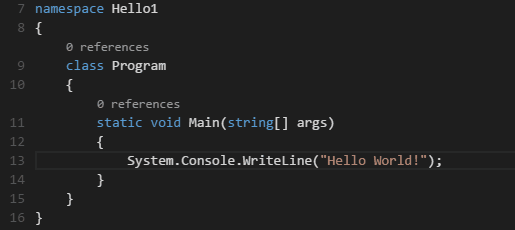

VS Code 指南
Visual Studio 终于把触角伸到了全平台，在加入了插件功能之后，VSC 事实上已经对各种老牌新生编辑器造成了强大的压力，为了紧跟时代脚步，还是要熟悉和了解一下 VSC 的。
这里基本上是官方教程的总结和翻译。
基础知识
归根到底 VSC 是一个代码编辑器，所以和其他的代码编辑器一样，基本的该有的甚至不该有的功能，都有。下面会简要介绍一下
文件、文件夹和项目
随意打开一个文件或者文件夹，就可以进行编辑，如果文件夹里包含 package.json, project.json, tsconfig.json 或者其他 ASP.NET 5 的 sln 文件，VSC 可以自动读取项目结构并且高亮显示出来
基础视图
Editor, Side Bar, Status Bar 和 View Bar 这里基本的标配都有
Tip: 可以用 command+B 来切换显示侧边栏
多栏编辑
只需要记住一些快捷键即可
- command+\ 分成多栏
- command+1/2/3 通过数字键选择当前激活的文件
- 可以自由调整和重新排序
文件浏览器
文件浏览器中可以进行基本的文件操作，对着文件点击右键即可，甚至还可以直接在 terminal 中打开！
Tip: command+p 可以通过文件名快速查找并打开文件
默认来说，VSC 会排除显示一些文件夹(例如 .git)，当然也可以在 user setting 中配置 files.exclude 来自定义排除规则（是支持通配符的如\*.meta）
已打开文件
已打开文件会在边栏的上方显示，如果需要自定义，可以设置下面一些属性：
explorer.workingFiles.maxVisibleexplorer.workingFiles.dynamicHeight
跨文件搜索
快捷键 shift+command+f，支持全文搜索，中文英文都可以！简直爆炸！而且还支持正则表达式！
如果需要更高级的搜索，可以使用 shift+command+j
下面列出基本的正则表示：
*to match one or more characters in a path segment?to match on one character in a path segment**to match any number of path segments ,including none{}to group conditions (e.g.{**/*.html,**/*.txt}matches all html and txt files)[]to declare a range of characters to match (e.g., example.[0-9] to match on example.0, example.1, …
注意可以自定义搜索范围，在设置中设定
files.excludesearch.exclude
命令板
按 F1 就可以调出 Command Palette，这里可以快速输入各种命令，一些基本技巧
- command+p: 通过文件名找文件
- control+tab: 可以循环切换之前打开的文件
- shift+command+o: 可以导航到文件中的指定符号
- control+g: 导航到指定行
在 Command Palette 中输入 ? 可以显示当前可用的操作
文件编码支持
在 files.encoding 设置中设置具体的编码，可以在 右下角的状态栏中看到。点击状态栏中的编码可以用指定编码打开或者保存文件(还需要选择具体的编码格式)
编辑功能
理论上来说，基本上该有的功能都有，这里只列出一些超赞的功能
括号匹配
括号会自动高亮匹配，可以用 shift+command+] 来跳到匹配的括号位置
多行选择
利用 alt+click 来激活多行选择，每个光标都是独立的，另一个比较方便添加光标的方式是 option+command+↓ 和 option+command+↑，这会在正下方或上方添加光标
command+D 选择当前单词，或者是当前单词下一次出现的位置，command+K command+D 会选择单词最后一次出现的位置
其他一些添加光标的方式是
shift+command+l: 在单词下一次出现处添加光标command+f2: 在下一个单词前添加光标
缩进/扩展选择
选择缩进/扩展，快捷键 control+shift+command+← / control+shift+command+→

智能提示
对于 JavaScript, JSON, HTML, CSS, Less, Sass, C#, TypeScript 都有智能提示，也可以用 control+space 手动激活，用 ., tab, Enter 来选择
默认会在输入的时候进行智能提示，即所谓 24x7 IntelliSense，可以在 editor.quickSuggestions 和 editor.suggestOnTriggerCharacters 中进行设置
参数提示
在 JavaScript, TypeScript 和 C# 中，会自动提示函数的参数，可以用方向键进行导航
代码片段
可以在 User Snippets (File | Preferences) 中设定自己的 snippet
跳转到定义
如果语言支持的话，可以用 F12 来跳转到定义。如果按着 ctrl 并把指针放到一个符号上，会有一个简单的预览框。如果需要跳转到定义处可以使用 ctrl+click。如果需要在另外一侧的窗口打开定义，使用 ctrol+alt+click
扩展
支持扩展是使编辑器更加强大的方法，这里简要介绍一些目前我觉得比较有用的扩展
安装
安装方法非常简单，用 F1 打开 命令行，然后输入 ext inst 来进行操作
- Markdown Theme Kit
- Markdown 预览
command+k v